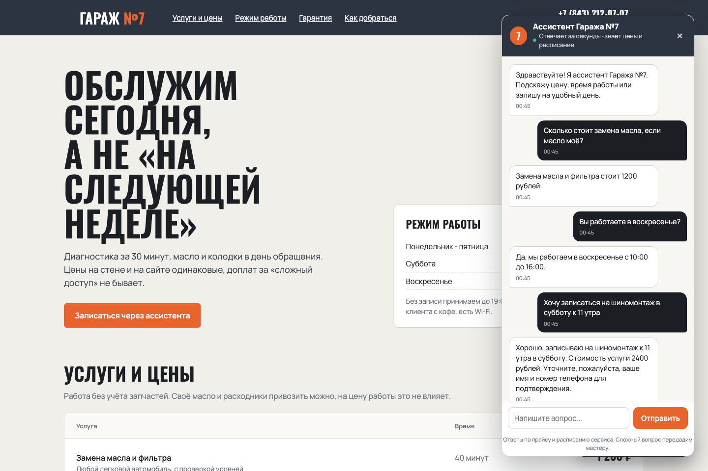
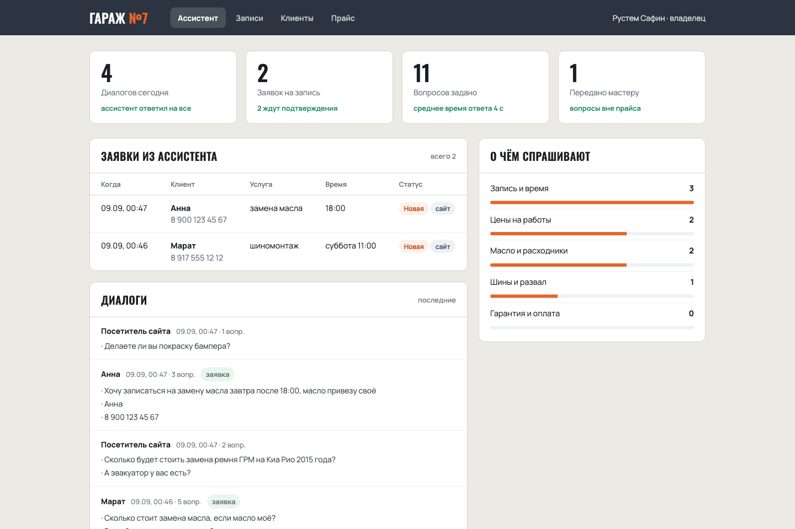
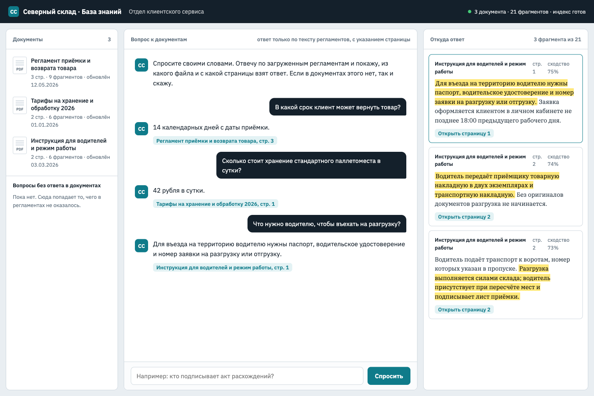
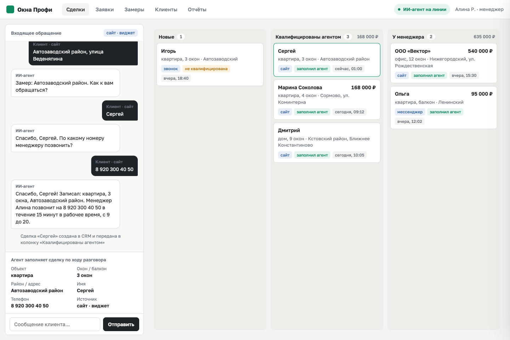

Делаю ассистентов, которые отвечают клиентам по вашему прайсу и документам, записывают на услугу и заводят сделку в CRM. Отвечают ночью и в выходные, ничего не выдумывают, а сложное передают человеку.
Более 150 проектов, опыт более 3 лет. Руководил аутсорс-разработкой в AI-компании. Python, JavaScript, LLM, RAG, интеграции по API.
Компании и данные в прототипах вымышленные. Модель, диалоги и цифры настоящие: все реплики получены прогоном модели, ни одна не написана руками.
Отвечает по прайсу и расписанию, записывает на услугу за 3-5 реплик. На вопрос о цене, которой нет в базе, называет нижнюю границу и предлагает диагностику. Услугу, которую сервис не оказывает, не придумывает, а передаёт вопрос мастеру. Заявки с именем, телефоном, услугой и временем ложатся в панель владельца.


Три регламента склада, 21 фрагмент. Поиск гибридный: смысловая близость плюс совпадение слов. Ответ идёт со ссылкой на файл и страницу, кнопка открывает документ с подсвеченным предложением. Вопросы без ответа складываются в список для отдела: из него видно, чего в регламентах не хватает.

Понимает свободный текст клиента, задаёт только недостающие вопросы по сценарию отдела продаж, отвечает на встречный вопрос о цене и возвращается к сценарию. Когда данные собраны, создаёт сделку на доске с расшифровкой разговора.

Прототип чата по документам проверен на 22 вопросах: 15 по документам и 7 посторонних. Локальная модель qwen2.5:3b и эмбеддер nomic-embed-text через Ollama, MacBook M4 16 ГБ, прогон 18.09.2026.
Один ответ из пятнадцати модель дала неполным. Поэтому ассистент всегда показывает источник, а вопросы про деньги в нестандартной ситуации передаёт человеку.
Реалистичная планка для малого бизнеса: от трети до половины. По отчёту Salesforce State of Service (ноябрь 2025, 6500 специалистов) ИИ обрабатывает около 30% обращений. Это типовые вопросы: цена, расписание, запись. Остальное ассистент передаёт человеку с уже собранными данными.
Он отвечает только по базе знаний компании и показывает источник. В тесте прототипа модель отказалась отвечать на все 7 вопросов, ответа на которые в документах не было.
Да. Прототипы работают на локальной модели на обычном ноутбуке. В боевой сборке модель выбирается под требования к хранению данных: локальная или облачная по ключу заказчика.
В карточку с заполненными полями: имя, телефон, услуга, время. Интеграции: amoCRM, Битрикс24, Google Таблицы. Каналы: сайт, Telegram, WhatsApp, VK, Max, Авито.
Через профиль на Kwork. Напишите задачу своими словами, назову точную цену и срок. Оплата идёт через безопасную сделку площадки: деньги я получаю после того, как вы приняли работу.